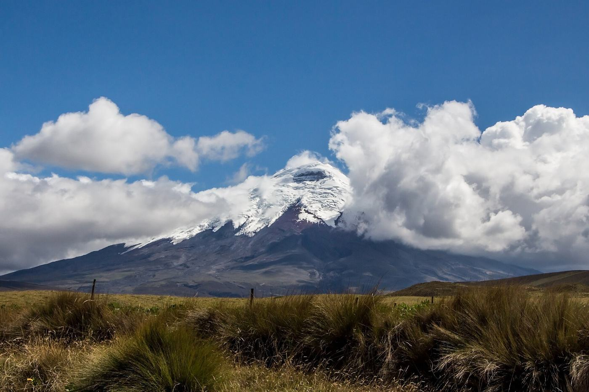
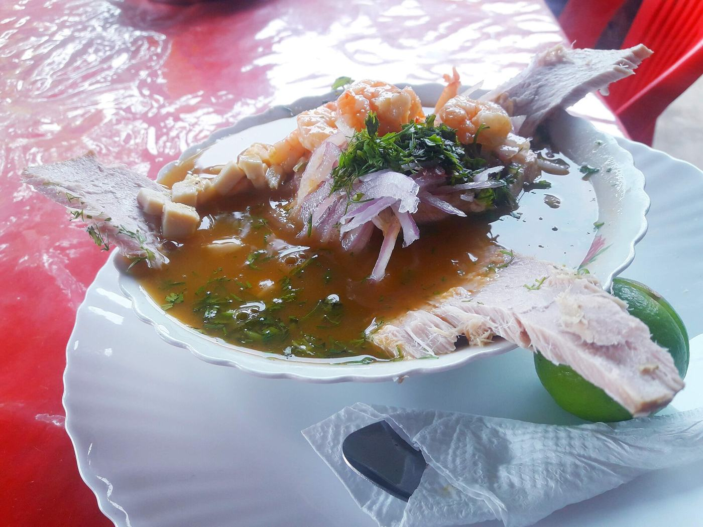
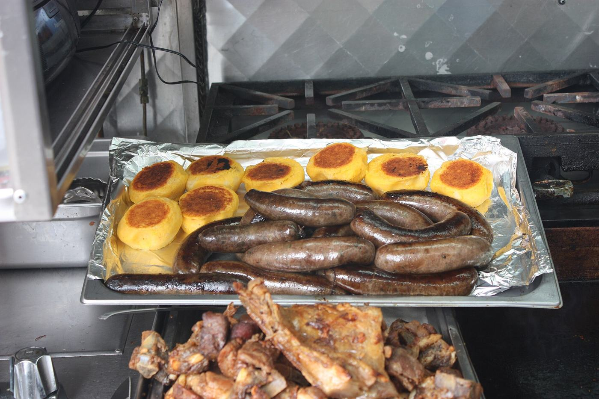
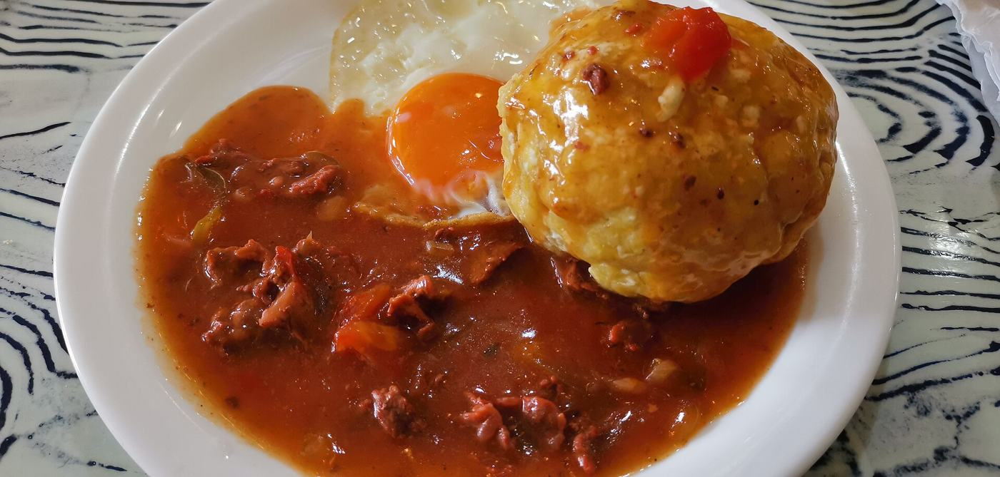
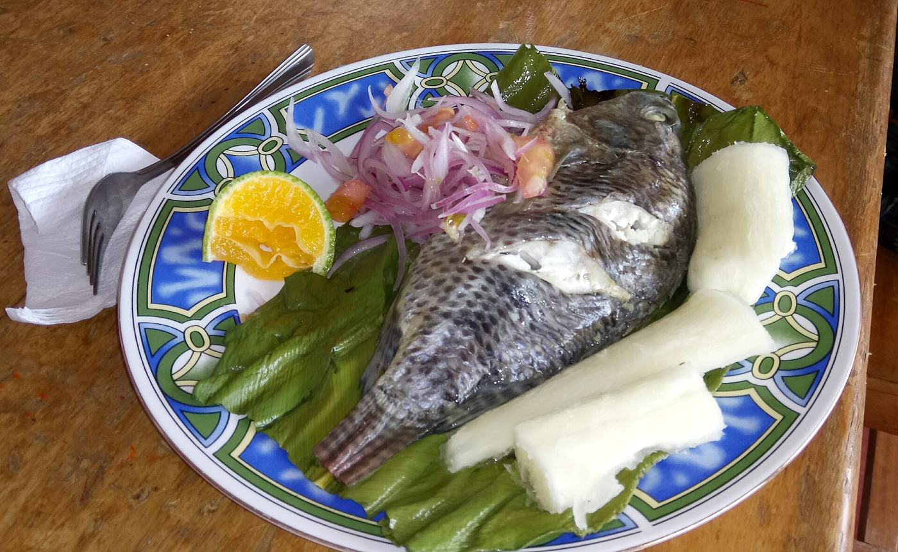
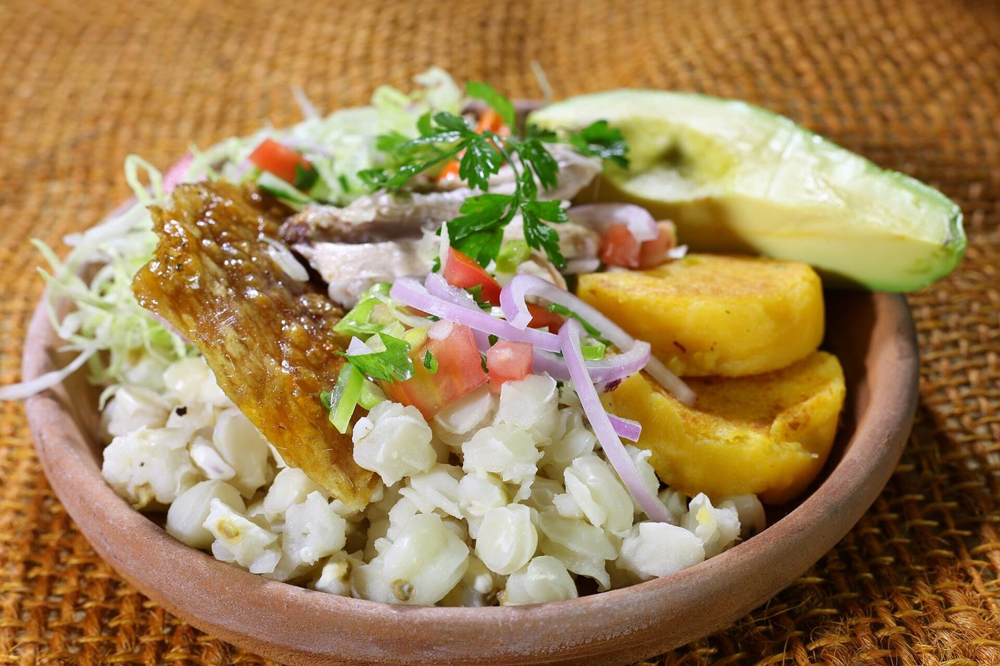
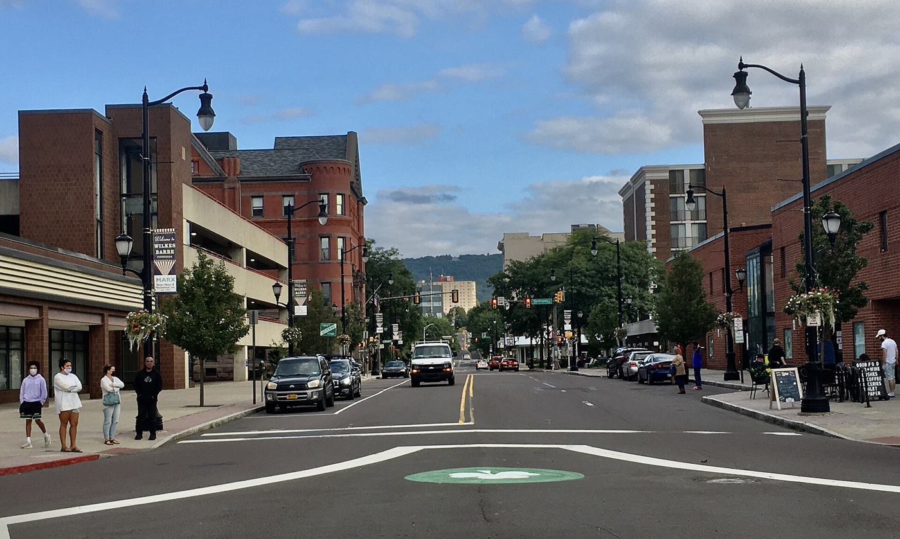

Cotopaxi (página de inicio)Foto de Bernard Gagnon · CC BY-SA 3.0Ver en Wikimedia Commons ↗ Mitad del MundoFoto de Diego Delso · CC BY-SA 4.0Ver en Wikimedia Commons ↗
Mitad del MundoFoto de Diego Delso · CC BY-SA 4.0Ver en Wikimedia Commons ↗ Parque Nacional CotopaxiFoto de Ymblanter · CC BY-SA 4.0Ver en Wikimedia Commons ↗
Parque Nacional CotopaxiFoto de Ymblanter · CC BY-SA 4.0Ver en Wikimedia Commons ↗ Laguna del QuilotoaFoto de Annom · Dominio públicoVer en Wikimedia Commons ↗
Laguna del QuilotoaFoto de Annom · Dominio públicoVer en Wikimedia Commons ↗ CuencaFoto de Bernard Gagnon · CC BY-SA 3.0Ver en Wikimedia Commons ↗
CuencaFoto de Bernard Gagnon · CC BY-SA 3.0Ver en Wikimedia Commons ↗ ChimborazoFoto de Dabit100 / David Torres Costales Riobamba · CC BY-SA 3.0Ver en Wikimedia Commons ↗
ChimborazoFoto de Dabit100 / David Torres Costales Riobamba · CC BY-SA 3.0Ver en Wikimedia Commons ↗ Bosque nublado de MindoFoto de Murray Foubister · CC BY-SA 2.0Ver en Wikimedia Commons ↗
Bosque nublado de MindoFoto de Murray Foubister · CC BY-SA 2.0Ver en Wikimedia Commons ↗ IngapircaFoto de Bernard Gagnon · CC BY-SA 3.0Ver en Wikimedia Commons ↗
IngapircaFoto de Bernard Gagnon · CC BY-SA 3.0Ver en Wikimedia Commons ↗ Parque Nacional El CajasFoto de Delphine Ménard (notafish }<';>) · CC BY-SA 2.0 frVer en Wikimedia Commons ↗
Parque Nacional El CajasFoto de Delphine Ménard (notafish }<';>) · CC BY-SA 2.0 frVer en Wikimedia Commons ↗ Malecón 2000, GuayaquilFoto de Freddy eduardo · CC BY-SA 4.0Ver en Wikimedia Commons ↗
Malecón 2000, GuayaquilFoto de Freddy eduardo · CC BY-SA 4.0Ver en Wikimedia Commons ↗ MontañitaFoto de Mikaelashamrock · CC BY-SA 4.0Ver en Wikimedia Commons ↗
MontañitaFoto de Mikaelashamrock · CC BY-SA 4.0Ver en Wikimedia Commons ↗ Quito, Plaza GrandeFoto de Ángel M. Felicísimo · CC BY-SA 4.0Ver en Wikimedia Commons ↗
Quito, Plaza GrandeFoto de Ángel M. Felicísimo · CC BY-SA 4.0Ver en Wikimedia Commons ↗ Mercado de OtavaloFoto de Bernard Gagnon · CC BY-SA 4.0Ver en Wikimedia Commons ↗
Mercado de OtavaloFoto de Bernard Gagnon · CC BY-SA 4.0Ver en Wikimedia Commons ↗ Pailón del Diablo, BañosFoto de Hanspeter Bellers · CC BY-SA 4.0Ver en Wikimedia Commons ↗
Pailón del Diablo, BañosFoto de Hanspeter Bellers · CC BY-SA 4.0Ver en Wikimedia Commons ↗ Isla de la PlataFoto de Arabsalam · CC BY-SA 4.0Ver en Wikimedia Commons ↗
Isla de la PlataFoto de Arabsalam · CC BY-SA 4.0Ver en Wikimedia Commons ↗ Playa Los FrailesFoto de AnitaAD · CC BY-SA 4.0Ver en Wikimedia Commons ↗
Playa Los FrailesFoto de AnitaAD · CC BY-SA 4.0Ver en Wikimedia Commons ↗ Río Napo, TenaFoto de David C. S. · CC BY-SA 3.0Ver en Wikimedia Commons ↗
Río Napo, TenaFoto de David C. S. · CC BY-SA 3.0Ver en Wikimedia Commons ↗ Parque Nacional YasuníFoto de Lauren Whitehurst · CC BY-SA 4.0Ver en Wikimedia Commons ↗
Parque Nacional YasuníFoto de Lauren Whitehurst · CC BY-SA 4.0Ver en Wikimedia Commons ↗ Isla Santa CruzFoto de Bernard Gagnon · CC BY-SA 4.0Ver en Wikimedia Commons ↗
Isla Santa CruzFoto de Bernard Gagnon · CC BY-SA 4.0Ver en Wikimedia Commons ↗ Isla San CristóbalFoto de Diego Delso · CC BY-SA 4.0Ver en Wikimedia Commons ↗
Isla San CristóbalFoto de Diego Delso · CC BY-SA 4.0Ver en Wikimedia Commons ↗ Reserva Faunística CuyabenoFoto de Fährtenleser · CC BY-SA 4.0Ver en Wikimedia Commons ↗
Reserva Faunística CuyabenoFoto de Fährtenleser · CC BY-SA 4.0Ver en Wikimedia Commons ↗
EncebolladoFoto de Montielec98 · CC BY-SA 4.0Ver en Wikimedia Commons ↗
LlapingachosFoto de Gary Soup · CC BY 2.0Ver en Wikimedia Commons ↗ FanescaFoto de Montielec98 · CC BY-SA 4.0Ver en Wikimedia Commons ↗
FanescaFoto de Montielec98 · CC BY-SA 4.0Ver en Wikimedia Commons ↗ Colada morada y guaguas de panFoto de Agencia de Noticias ANDES · CC BY-SA 2.0Ver en Wikimedia Commons ↗
Colada morada y guaguas de panFoto de Agencia de Noticias ANDES · CC BY-SA 2.0Ver en Wikimedia Commons ↗
Bolón de verdeFoto de Z thomas · CC BY-SA 4.0Ver en Wikimedia Commons ↗
MaitoFoto de Iestrella · CC BY-SA 4.0Ver en Wikimedia Commons ↗
HornadoFoto de amalavida.tv from Ecuador · CC BY-SA 2.0Ver en Wikimedia Commons ↗
Public Square, Wilkes-Barre, PAFoto de Andre Carrotflower · CC BY-SA 4.0Ver en Wikimedia Commons ↗


.jpg){kind=link}


_Yasuni_Research_Station.jpg){kind=link}

,_Punta_Pitt,_isla_de_San_Crist%C3%B3bal,_islas_Gal%C3%A1pagos,_Ecuador,_2015-07-24,_DD_12.JPG){kind=link}


.jpg){kind=link}


_(14294973591).jpg){kind=link}

Las fotos se muestran redimensionadas y recortadas. Licencias: Creative Commons (CC BY y CC BY-SA) y dominio público, según se indica en la página de Commons de cada foto.